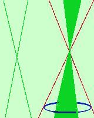

|
 E' l'intersezione fra un cono matematico ed un piano passante per il vertice e la circonferenza di base: otteniamo una coppia di rette Naturalmente per la figura intendiamo solo il bordo cioe' le rette e non la parte di piano compresa (non e' un'area) |